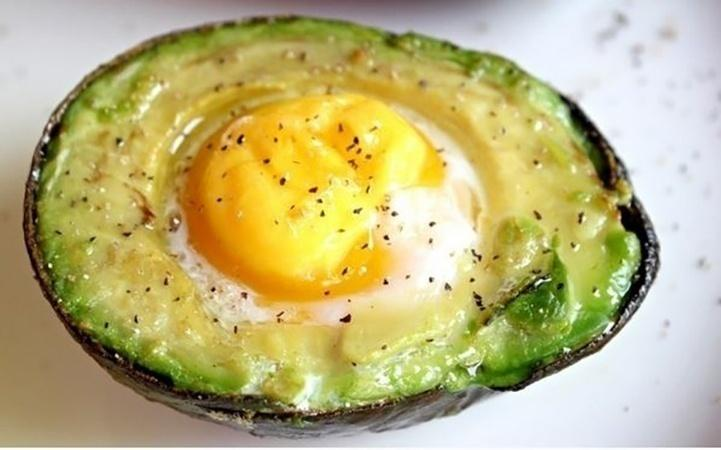

| Lista de Comidas para o Café da Manhã | ||
| *Café não está autorizado para o Ismael | ||
| Nome do Prato | Ingredientes | Foto com Link da Receita |
|---|---|---|
| Abacate com Ovo | Abacate, ovo, pimenta do reino, sal agosto |  |
| Panqueca com Banana | Banana, aveia, açúcar ou adoçante agosto | |
| Pão com Manteiga | Pão carioquinha e Manteiga | |
| Tapioca Recheada | Fécula, água, sal agosto e recheio |
|